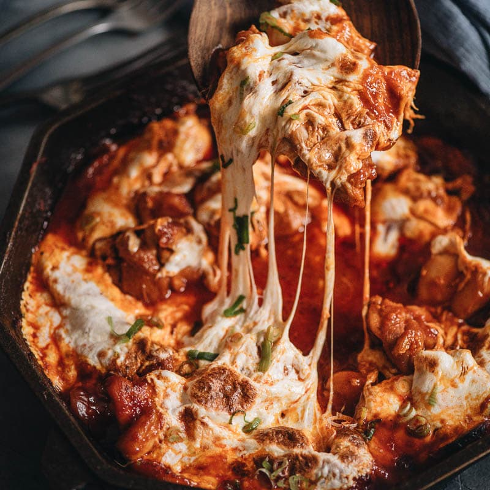

Michael's Fire Chicken Recipe

Description
Buldak (fire chicken) is a popular Korean spicy chicken dish served as a street food or light meal. Either bone-in or boneless chicken is marinated in a fiery sauce made from gochujang and Korean chili flakes, then typically grilled or fried.
Ingredients
- Rice Cakes
- Gochujang
- Korean Red Pepper Flakes
- Chicken Breast
- Sesame Oil
- Garlic
- Mozzarella
Steps
- Chop chicken breast into one-inch cubes
- Mince garlic and mix with soy sauce, gochujang, korean red pepper flakes to make the sauce
- Mix the chicken in the sauce
- Add one quarter cup water to chicken
- Cook chicken in a covered cast iron pot for 10 mins
- While the chicken cooks, pan fry your rice cakes in vegetable oil for a couple of minutes on each side - until slightly crispy on both sides
- Once chicken has cooked for 10 minutes, add the rice cakes on top of the chicken. Cook for another 10 minutes
- Preheat the oven to broil
- Once the rice cakes and chicken have finished cooking, mix so the rice cakes are covered in the sauce
- Add mozzarella on top and put in oven under broiler for a few minutes. Check frequently and cook until the cheese is lightly browned and bubbling
- Enjoy!